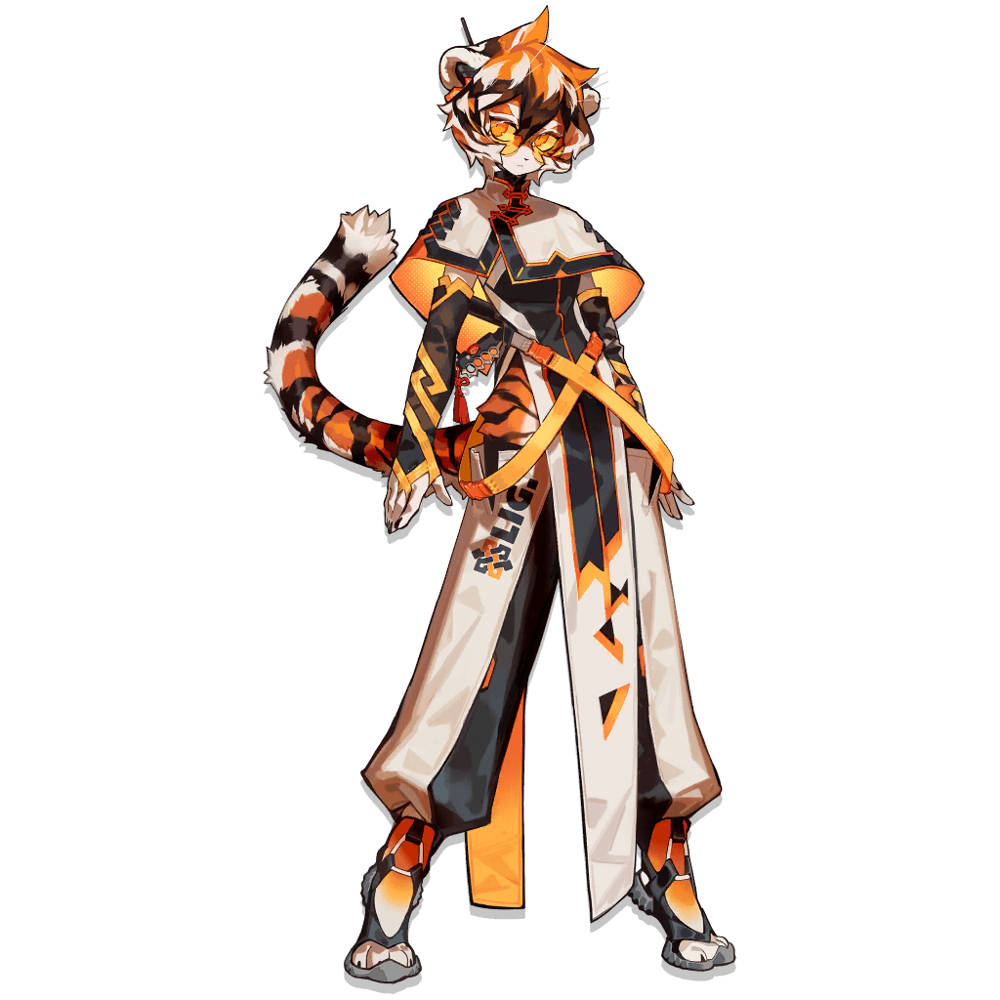

Waai Fu Elite 0 to 1 ingame art.

Waai Fu Elite 2 ingame art.
This site was created to honour Waai Fu for her service to Rhodes Island and Lungmen.
Is this Rhodes Island? Nice to meet you. I'm Waai Fu, your new part-timer. Please don't go easy on me. I can handle anything you ask of me.
About her
Waai Fu is a university student from Lungmen, serving Rhodes
Island from the first batch of employees hired under a secret
Lungmen-Rhodes Island commercial agreement. On the
recommendation of a certain firm, she took a battery of tests
that showed scores wildly inconsistent with her stated identity.
She clearly has substantial combat experience. Several
investigations are ongoing.
Clinical analysis
Imaging tests reveal clear, normal outlines of internal organs,
and no abnormal shadows have been detected. Originium granules
have not been detected in the circulatory system and there are
no other signs of infection. At this time, this operator can be
confirmed to be uninfected.
[Cell-Originium Assimilation]
0% [NOT INF]
Operator Waai Fu shows no signs of Oripathy infections.
[Blood Originium-Crystal Density]
0.13u/L [NONE]
Operator Waai Fu rarely interacts with Originium or its
byproducts, and has a healthier physique than the average
citizen. Although there is no relationship between one's
physique and susceptibility to Oripathy...
“
Hey, this young lady can jump between buildings and punch
through a wall with her bare fists. Makes sense she's in
good shape, eh?
”
--Mr. Aak, who happened to pass by.